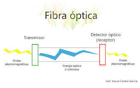

El papel, en el caso de los mensajes escritos, ya sean una carta de amor, una noticia en el periódico o un mensaje público que advierte que un aparato está averiado y no debemos usarlo.
La fibra óptica, por donde nuestras computadoras conectadas a Internet envían y reciben señales informáticas en forma de pulsos eléctricos, recorriendo largas distancias de ida y de vuelta.
La comunicación cara a cara es una forma de comunicación en la que las personas pueden verse entre sí y interpretar el lenguaje corporal y las expresiones faciales. Este tipo de comunicación permite un mejor intercambio de información y una conexión emocional más fuerte entre las personas.